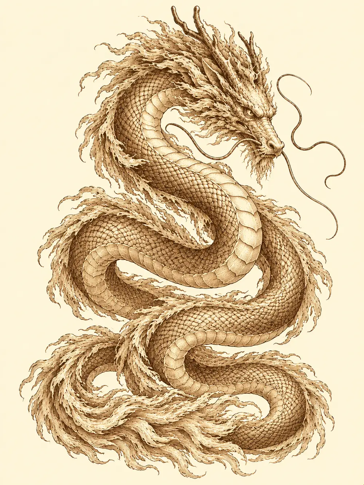

Capítulo 79
El último guardián
Libro V · Los guardianes del Norte y del Sur
Pusieron una lápida sin nadie debajo. Estaba en un rincón de Sho que no era especialmente importante, pero donde cualquiera podía encontrarla, y llevaba el nombre de Sirth. Fueron todos los cazadores. Fue también el shogun, con algunos nobles, y estuvo un rato en silencio delante de la piedra con las manos cruzadas a la espalda. Shizuka lloró hasta quedarse sin voz. Maroxi no apareció; llevaba días encerrado en su habitación, y nadie se atrevió a llamar a su puerta, porque quizá la muerte del clérigo le había golpeado más de lo que quería admitir, o quizá era otra cosa.
Después cada uno se fue a lo suyo, y cuatro de ellos acabaron en la base de Sho sin saber muy bien qué hacer con las manos. Ermitaño. Gur, con Kuma sobre el hombro. Ikari, el tanuki, con su botella de sake que nunca se vaciaba. Y Erk, con las plumas rojas apagadas y la mirada clavada en el suelo.
Erk sabía por qué había muerto Sirth. La sangre negra de Otakemaru le había entrado en el cuerpo, y el clérigo se la había sacado y se la había quedado él. Por eso estaba enfermo. Por eso estaba muerto.
"¿Cómo se llamaba?", preguntó Gur, rompiendo el silencio. "El veterinario".
Nadie le corrigió.
Erk no había bebido alcohol en su vida. Le pidió a Ikari la botella y el tanuki se la dio sin hacer preguntas. Le metió un trago larguísimo, tosió, y luego otro. Al tercero ya le daba vueltas la habitación, y lo que sentía no era euforia sino una tristeza espesa que le subía desde el estómago. Dejó la botella delante de ella, al alcance de la mano.
Fueron a la taberna de Ushi porque Gur tenía hambre y en la base no quedaba comida. Ushi les sirvió vino dulce con especias, cerveza y un cocido grasiento para que a Erk se le bajara la borrachera, y por un rato fue casi un velatorio decente. Brindaron por Sirth. Ermitaño se fijó en los objetos que llevaban los demás, los regalos de los guardianes, y empezaron a enseñárselos unos a otros.
"Yo tengo esto", dijo Gur, levantando la mano con el anillo de hueso rojo.
La bola de fuego salió de la gema.
Media taberna estalló en llamas. Ardió la mesa, ardieron los bancos, a una mujer se le prendió el vestido y salió corriendo y gritando con el marido detrás. Una de las paredes reventó hacia la calle y dejó un boquete por el que entraba el aire de la tarde. Por suerte no murió nadie. Ermitaño se puso en pie de un salto.
"¡Que voy a curar! ¡Si os salís de la zona no os puedo curar!".
Curó a todos los que pudo, y luego, con su paciencia de siempre, se puso a reparar lo que tenía arreglo: tablas, vigas, jarras rotas. Gur se miraba el anillo como si le hubiera mordido. Tenía un mechón de pelo humeando.
Llegaron los guardias. Uno de ellos sacó un papel y empezó a anotar nombres, porque si eran cazadores había que registrarlo. Ermitaño les enseñó su insignia y les explicó que había habido un pequeño accidente. Entre todos le dieron al guardia una lista de nombres que incluía el de Danifae y el de Guxi, que no estaban allí ni se les esperaba.
Erk dejó cien monedas sobre lo que quedaba de la barra. Ikari le ofreció a Ushi rellenarle los barriles de sake con su botella. El tabernero los miraba con los ojos húmedos, rodeado de madera chamuscada.
"Ya repararemos esto", les dijo. "Pero, por favor, marchaos".
En la calle, Ermitaño limpió como pudo la ropa manchada de vómito y le consiguió a Erk un vaso de agua, y Gur juró que la próxima vez no apuntaría con el dedo a nadie que no fuera un enemigo.
Paseaban sin rumbo por Sho cuando oyeron la voz. No llegó por los oídos sino por dentro, grave, imponente, de las que hacen que hasta un orco se ponga derecho.
"Cazadores. Sé que es un mal momento, pero ha llegado la hora de la prueba final".
Una columna de luz cayó sobre cada uno de ellos y los levantó del suelo. Kuma intentó saltar dentro de la de Gur y rebotó; se quedó abajo, en mitad de la calle, mirando cómo su discípulo se iba volando.
Subieron entre las nubes. Allí arriba flotaba un templo con las paredes cubiertas de oro, que brillaba tanto con el sol que había que entornar los ojos para mirarlo. Las columnas de luz los metieron dentro atravesando los muros como si no estuvieran.
"Sé que habéis perdido a un compañero", dijo la voz. "Sé que son momentos para pensar en él. Pero Otakemaru no va a esperar, y hay que proteger Kuroto. Demostradme que tenéis la bendición de los guardianes".
En el centro del templo había una cúpula cerrada por una gran puerta doble de oro. Alrededor, cuatro pasillos llevaban a cuatro salas, una por cada guardián. Ermitaño entró en la del norte sin problemas y se encontró dentro de una cueva de piedra; los demás lo siguieron y cayeron de rodillas aplastados por una presión enorme, como si les hubieran echado encima una montaña. Gur intentó hacer flexiones para demostrar lo fuerte que era y no pudo ni apoyar las manos. Ermitaño lo arrastró fuera.
"Ya lo entiendo", dijo el clérigo. "Llevo la armadura de Genbu. Por eso a mí no me afecta".
Se repartieron. Cada uno a la sala de su guardián: Ermitaño con Genbu, Ikari con Seiryu, Erk con Byakko, Gur con Suzaku. En cada sala había un altar y, sobre él, un libro. Las letras estaban escritas en una lengua desconocida, pero en cuanto alguien las miraba cambiaban y se convertían en algo que podía leer, adaptadas a quien tenía el libro en las manos. A Ikari le contaba historias de Seiryu, el protector de los mares. A Erk, que seguía borracha, se lo contaba todo en un tono que le parecía muy cariñoso. A Gur le hablaba en la lengua de los orcos, como si un pájaro de fuego muy simpático le explicara lo mucho que molaba revivir. El bárbaro se sentó en el altar y se puso a leer como si tuviera en las manos la mejor novela jamás escrita. Nadie lo había visto nunca tan concentrado.

Aprendieron enseguida que los libros no podían salir de las salas. Quien lo intentaba sentía el templo entero quemándole la piel. Aprendieron también, después de muchas idas y venidas, de llamarse a gritos por los pasillos y de perderse unos a otros, que cuando el regalo de un guardián se acercaba a su libro, el libro se iluminaba, y con él uno de los cuatro emblemas de la gran puerta. Erk se sentó en el suelo con el libro entre las patas, junto a las botas que le había dado Byakko, y el emblema del tigre brilló. Ikari dejó su colgante junto al libro de Seiryu. Ermitaño, su armadura junto al libro de Genbu. Gur, que no soltaba el suyo, tenía el anillo pegado a las páginas.
Los cuatro emblemas se encendieron y la puerta se abrió.
Dentro de la cúpula todo resonaba. Erk entró descalza: se había quitado las botas y las había dejado junto al libro. Gur entró gritando que le habían dicho que allí había que pegarse con alguien.
En el centro se alzó un dragón. Era largo como una serpiente, de los que se ven pintados en los biombos antiguos, y era de oro puro; brillaba tanto que dolía mirarlo. Acercó la cabeza a cada uno de ellos, despacio, y los observó.
"Soy Kogan Dragon. Fui yo quien os envió a buscar a los guardianes. Fui yo quien envió a vuestra amiga Katari para ayudaros".
Chasqueó una garra, y Katari apareció sentada a su lado. No los saludó. Estaba quieta junto al dragón como una lugarteniente junto a su señor.
"Y ahora tenéis que demostrarme que sois dignos", dijo Kogan Dragon. "Que lo daríais todo por Kuroto".
Rugió, y Gur no necesitó más.
"¡Ahora sí! ¡Ven aquí, que te voy a cortar las puntas!".
Saltó contra el dragón con la espada, y la segunda estocada le salió tan limpia que la hoja se envolvió en llamas. El dragón le devolvió el golpe con una zarpa que no vio venir. Katari se movía alrededor de Kogan Dragon, lo curaba, lo protegía, lo hacía más fuerte. Gur se dio cuenta y fue a por ella. La derribó. El dragón la miró, inclinó la cabeza, y Katari volvió a levantarse curada.
La prueba fue cruel. El dragón agarró a Gur y lo sujetó entre las garras, e Ikari lo sacó de allí con un salto de magia que los trasladó a los dos lejos de su alcance. Una luz radiante salió de la boca de Kogan Dragon y Erk cayó al suelo; después cayó Ermitaño. El clérigo había vaciado su magia levantando a unos y a otros. Katari paralizó a Gur con un gesto y el dragón aprovechó para hundirle los dientes, y luego la druida levantó a su alrededor un muro de piedra que lo dejó encerrado. Ikari pasó su magia por el bastón de sombras y la convirtió en magia de muerte, se protegió, ayudó a los caídos a ponerse en pie una y otra vez. Al final el dragón también lo alcanzó a él.
"Demostradlo", repetía Kogan Dragon. "Demostrad lo que daríais por esta isla".
Resistir no bastaba. Huir tampoco.
Gur estaba en el suelo, dentro del muro, cuando sintió la furia subirle desde las tripas. Se puso de pie de un salto, trepó saltando de pared en pared hasta el borde del muro y se agarró arriba. Entonces se acordó del anillo. Lo había tenido pegado al libro de Suzaku, y la gema había vuelto a cargarse. La bola de fuego le estalló a Katari en la cara.
La druida perdió la concentración y el muro se vino abajo. Gur corrió hacia ella con lo que le quedaba de vida. Katari invocó a su espalda el espíritu de un dragón metálico, pequeño y furioso, que se lanzó contra el bárbaro y lo hirió. No fue suficiente. Gur alcanzó a Katari y la mató, y siguió golpeando su cuerpo mucho después de que no hiciera falta. El pequeño dragón invocado se desvaneció. Kogan Dragon, por encima del hombro, lo miraba hacer.
Cuando terminó, Gur levantó la vista. A su alrededor no quedaba nadie en pie. Erk, Ermitaño, Ikari, todos en el suelo. Solo estaban él y el dragón.
Abrió los brazos de par en par, el hacha en una mano y la espada en la otra.
"Mátame".
El dragón sonrió. No era una sonrisa de bestia; era una sonrisa amable, casi tierna, la de quien por fin oye lo que esperaba oír. Tomó aire, y la luz salió de su boca y cayó sobre el bárbaro.
Despertaron todos a la vez, envueltos en un resplandor, Katari también. Kogan Dragon estaba de pie en el centro de la cúpula con las garras alzadas, como si fuera él quien tirara de ellos hacia la vida.
"Por fin habéis entendido lo que tenéis que dar por Kuroto", dijo. "Sois aquellos a quienes los guardianes han protegido y bendecido. Ahora sois los defensores de Kuroto".
La cúpula se abrió hacia el cielo. Los regalos de los guardianes volaron hacia sus dueños, se iluminaron y los levantaron del suelo, uno en cada punto cardinal, flotando alrededor del dragón. Kogan Dragon se estiró hacia arriba, recto como un mástil, y lanzó un grito. La luz le brotó de la boca, y de la armadura, el colgante, las botas y el anillo salieron cuatro rayos que se unieron al suyo. Desde aquella altura veían toda la isla, y vieron cómo sobre el norte de Kuroto se cerraba una cúpula de luz semitransparente, tan suave que la gente de abajo ni siquiera la notaría.
"Ahora Kuroto está protegida. Mientras los guardianes y yo sigamos vivos, Otakemaru no podrá entrar".
Ermitaño se lo agradeció, y quiso estar seguro.
"¿Y sus tropas?".
"Sus tropas sí pueden entrar", dijo el dragón. "La protección es para él. Marchad, explicadles esto a vuestros compañeros e id al sur a acabar con él".
Las columnas de luz los devolvieron a Sho, al mismo punto de la calle de donde los habían arrancado y en el mismo instante. La gente que pasaba vio caer del cielo cuatro chorros de luz y siguió andando, como quien está acostumbrado a los magos.
Kuma los esperaba allí. Le contó a Gur que unos guardias le habían preguntado si había sido él quien había reventado la pared de la taberna, y que les había dicho que no, que había sido el mono.
Había que contárselo todo al gremio cuanto antes, pero Gur necesitaba un trago. Volvieron a la taberna de Ushi, donde no quedaba una mesa entera, y Gur se sentó en una silla carbonizada.
"Ponme algo de beber".
Ermitaño intentaba sacarlo de allí tirándole del brazo. Ushi, detrás de la barra, se cubrió la cara con las manos y preguntó en voz alta por qué tenían que pasarle estas cosas a él. Fuera, en algún lugar del norte, la cúpula brillaba sobre la isla, y la lápida de Sirth seguía en su rincón sin nadie debajo.